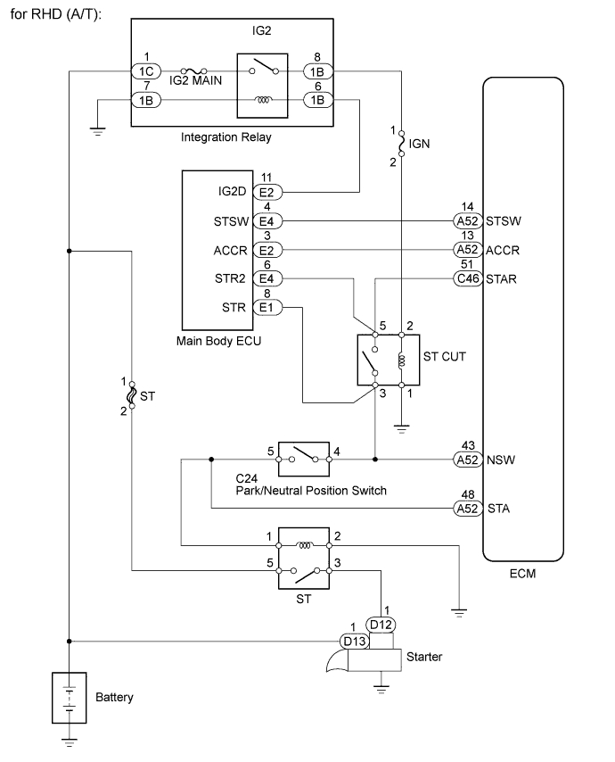
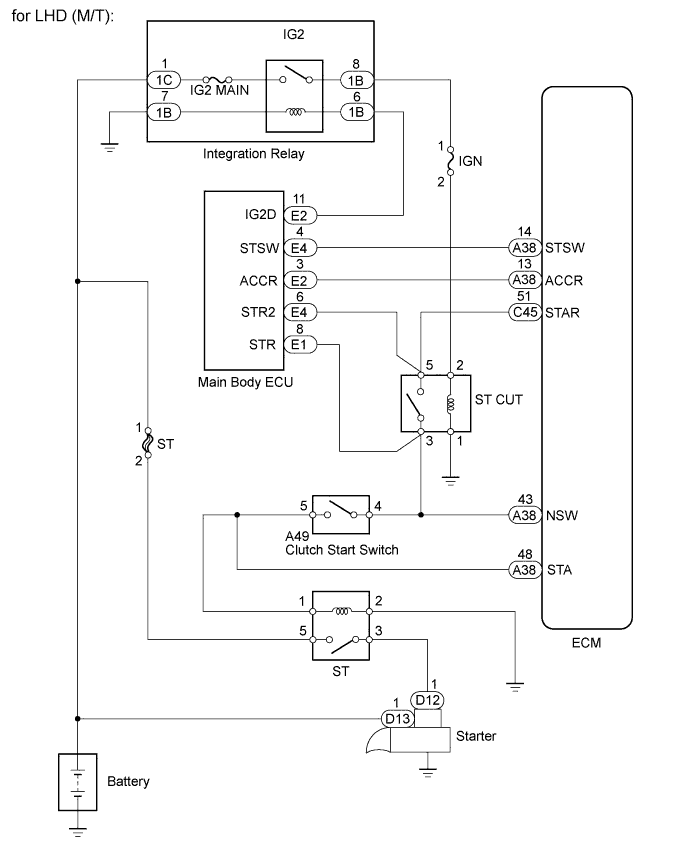

DTC P0617 Starter Relay Circuit High |
| DTC Detection Drive Pattern | DTC Detection Condition | Trouble Area |
| Drive vehicle for 25 seconds or more at a speed of 20 km/h (12.4 mph) or more and an engine speed of 1000 rpm or more | Conditions (a), (b) and (c) are met for 20 seconds (a) Vehicle speed is more than 20 km/h (12.4 mph). (b) Engine speed is more than 1000 rpm. (c) STA signal is on. |
|
| DTC No. | Data List |
| P0617 | Starter Signal |


| 1.READ VALUE USING INTELLIGENT TESTER (STARTER SIGNAL) |
Connect the intelligent tester to the DLC3.
Turn the engine switch on (IG) and turn the tester on.
Enter the following menus: Powertrain / Engine / Data List / All Data / Starter Signal.
Check the value displayed on the tester when the engine switch is turned on (IG) and the engine is started.
| Engine Switch Condition | Starter Signal |
| on (IG) | OFF |
| Engine started | ON |
| Result | Proceed to |
| NG (A/T) | A |
| NG (M/T) | B |
| OK | C |
|
| ||||
|
| ||||
| A | |
| 2.INSPECT PARK/NEUTRAL POSITION SWITCH ASSEMBLY |
Inspect the park/neutral position switch (Click here).
| Result | Proceed to |
| NG | A |
| OK | B |
|
| ||||
| A | |
| 3.REPLACE PARK/NEUTRAL POSITION SWITCH ASSEMBLY |
Replace the park/neutral position switch (Click here).
|
| ||||
| 4.INSPECT CLUTCH START SWITCH |
Check the clutch start switch (for LHD) (Click here).
Check the clutch start switch (for RHD) (Click here).
| Result | Proceed to |
| NG | A |
| OK | B |
|
| ||||
| A | |
| 5.REPLACE CLUTCH START SWITCH |
Replace the clutch start switch (for LHD) (Click here).
Replace the clutch start switch (for RHD) (Click here).
| NEXT | |
| 6.READ VALUE USING INTELLIGENT TESTER (STARTER SIGNAL) |
Connect the intelligent tester to the DLC3.
Turn the engine switch on (IG) and turn the tester on.
Enter the following menus: Powertrain / Engine / Data List / All Data / Starter Signal.
Check the value displayed on the tester when the engine switch is turned on (IG) and the engine is started.
| Engine Switch Condition | Starter Signal |
| on (IG) | OFF |
| Engine started | ON |
| Result | Proceed to |
| NG | A |
| OK | B |
|
| ||||
| A | |
| 7.CHECK HARNESS AND CONNECTOR (PNP SWITCH OR CLUTCH START SWITCH - STA TERMINAL OF ECM) |
|
| ||||
| OK | |
| 8.CHECK WHETHER DTC OUTPUT RECURS |
Connect the intelligent tester to the DLC3.
Turn the engine switch on (IG).
Turn the tester on.
Clear the DTCs (Click here).
Drive the vehicle at 20 km/h (12.4 mph) or more for 20 seconds or more.
Enter the following menus: Powertrain / Engine / DTC.
Read the DTCs.
| Display (DTC Output) | Proceed to |
| P0617 | A |
| No output | B |
|
| ||||
| A | ||
| ||